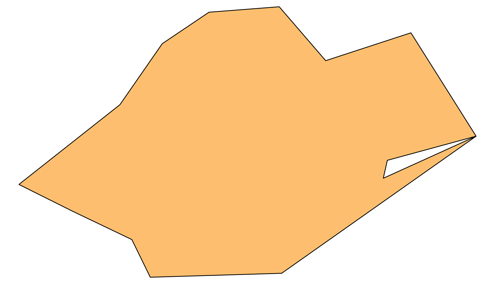

3.1.11. Verificação Topológica das Geometrias das Glebas
Para facilitar as análises dessa seção, iremos criar uma tabela denominada sicor_glebas a partir da tabela sicor_glebas_wkt, substituindo a coluna gt_geometria do tipo text por uma coluna denominada geom do tipo geometry com as geometrias em 2D e associadas ao SRS EPSG:4674. Além disso, iremos incluir uma coluna com o ano da data de emissão da operação associada à gleba. A Figura 3.10 apresenta a estrutura e relacionamento dessa tabela com a tabela de operações contratadas.
{kind=link}
Figura 3.10 - Tabela com coluna geométrica para tratamento das glebas.
O comando apresentado no Techo de Código 3.12 mostra como podemos criar essa tabela.
CREATE TABLE sicor_glebas AS
SELECT ROW_NUMBER () OVER () AS gid,
glebas.ref_bacen AS ref_bacen,
glebas.nu_ordem AS nu_ordem,
glebas.nu_indice AS nu_indice,
contratos.dt_emissao AS data_emissao_contrato,
(ST_Force2D(GT_GEOMETRIA::geometry))::geometry(geometry, 4674) AS geom
FROM sicor_glebas_wkt AS glebas,
sicor_operacao_basica_estado AS contratos
WHERE glebas.ref_bacen = contratos.ref_bacen
AND glebas.nu_ordem = contratos.nu_ordem;
ALTER TABLE sicor_glebas ADD CONSTRAINT sicor_glebas_pkey PRIMARY KEY (gid);
ALTER TABLE sicor_glebas ADD CONSTRAINT sicor_glebas_ukey UNIQUE (ref_bacen, nu_ordem, nu_indice);
CREATE INDEX sicor_glebas_geom_idx ON sicor_glebas USING GiST(geom);
CREATE INDEX sicor_glebas_data_emissao_contrato_idx ON sicor_glebas(data_emissao_contrato);
CREATE INDEX sicor_glebas_ano_idx ON sicor_glebas(extract(YEAR FROM data_emissao_contrato));
ALTER TABLE sicor_glebas ADD CONSTRAINT sicor_glebas_ref_bacen_fkey
FOREIGN KEY(ref_bacen, nu_ordem) REFERENCES sicor_operacao_basica_estado(ref_bacen, nu_ordem)
ON UPDATE CASCADE
ON DELETE NO ACTION;
3.1.11.1. Verificação das Geometrias
A partir da tabela sicor_glebas podemos avaliar a existência de glebas com geometrias inválidas com o uso da função ST_IsValid (Trecho de Código 3.13).
SELECT gid, ref_bacen, nu_ordem, nu_indice
FROM sicor_glebas
WHERE NOT ST_IsValid(geom);
O resultado mostrado abaixo indica que apenas 26 glebas possuem algum tipo de problema geométrico.
NOTICE: Ring Self-intersection at or near point 54.103099999999998 25.316500000000001
NOTICE: Ring Self-intersection at or near point -52.146380999999998 -24.662628000000002
NOTICE: Ring Self-intersection at or near point -47.544922 -10.505932
NOTICE: Ring Self-intersection at or near point -47.544922 -10.505932
NOTICE: Ring Self-intersection at or near point -52.208253999999997 -24.083690000000001
NOTICE: Ring Self-intersection at or near point -58.145878000000003 -15.524556
NOTICE: Ring Self-intersection at or near point -51.721031000000004 -24.555568999999998
NOTICE: Ring Self-intersection at or near point -52.386659999999999 -23.821411999999999
NOTICE: Ring Self-intersection at or near point -61.003579000000002 2.3315399999999999
NOTICE: Ring Self-intersection at or near point -52.292940000000002 -24.661868999999999
NOTICE: Ring Self-intersection at or near point -52.356896999999996 -23.897447
NOTICE: Ring Self-intersection at or near point -49.801737000000003 -9.6472180000000005
NOTICE: Ring Self-intersection at or near point -52.194122 -24.697422
NOTICE: Ring Self-intersection at or near point -53.847330999999997 -24.514718999999999
NOTICE: Ring Self-intersection at or near point -52.292940000000002 -24.661868999999999
NOTICE: Ring Self-intersection at or near point -52.352621999999997 -24.160169
NOTICE: Ring Self-intersection at or near point -51.548752 0.60170199999999996
NOTICE: Ring Self-intersection at or near point -52.133678000000003 -26.484113000000001
NOTICE: Ring Self-intersection at or near point -52.738799999999898 -26.415659999999999
NOTICE: Ring Self-intersection at or near point -40.756017999999997 -20.564651000000001
NOTICE: Ring Self-intersection at or near point -52.297652999999897 -18.096931000000001
NOTICE: Ring Self-intersection at or near point -49.637627999999999 -17.583576000000001
NOTICE: Ring Self-intersection at or near point -51.029156 -23.781583999999999
NOTICE: Ring Self-intersection at or near point -72.851114409999994 -7.8101053800000004
NOTICE: Ring Self-intersection at or near point -65.229758230000002 -10.68783363
NOTICE: Ring Self-intersection at or near point -54.85163923695 -28.178468158379999
gid | ref_bacen | nu_ordem | nu_indice
---------+-----------+----------+-----------
87692 | 9224227 | 1 | 0
87693 | 9224227 | 1 | 1
180299 | 9943482 | 1 | 0
271077 | 505196858 | 1 | 2
1214937 | 508992024 | 1 | 0
4926682 | 516242663 | 1 | 0
1642 | 4532422 | 1 | 1
378736 | 505804666 | 1 | 5
711850 | 507412386 | 1 | 1
813733 | 507928354 | 1 | 0
415927 | 506085211 | 1 | 2
417413 | 506093980 | 1 | 0
481085 | 506539153 | 1 | 1
593815 | 507068452 | 1 | 2
976638 | 508600719 | 1 | 0
1179154 | 508931913 | 1 | 0
3526719 | 513782490 | 1 | 0
39042 | 8485284 | 1 | 2
103311 | 9430765 | 1 | 0
125673 | 9593592 | 1 | 0
392979 | 505938220 | 1 | 1
393658 | 505942484 | 1 | 1
532660 | 506841795 | 1 | 0
3814156 | 514320193 | 1 | 1
410497 | 506051104 | 1 | 0
448769 | 506316575 | 1 | 2
(26 rows)
O número de geometrias inválidas em cada ano é muito pequeno, como mostrado no resultado da consulta abaixo (Trecho de Código 3.14).
WITH glebas_com_geom_invalidas AS (
SELECT extract(YEAR FROM data_emissao_contrato) AS ano,
COUNT(*) AS num_geom_invalidas
FROM sicor_glebas
WHERE NOT ST_IsValid(geom)
GROUP BY ano
),
glebas_com_geom_validas AS (
SELECT extract(YEAR FROM data_emissao_contrato) AS ano,
COUNT(*) AS num_geom_validas
FROM sicor_glebas
WHERE ST_IsValid(geom)
GROUP BY ano
)
SELECT glebas_com_geom_validas.ano AS ano,
glebas_com_geom_validas.num_geom_validas AS num_geom_validas,
CASE WHEN glebas_com_geom_invalidas.num_geom_invalidas IS NULL THEN 0
ELSE glebas_com_geom_invalidas.num_geom_invalidas
END AS num_geom_invalidas
FROM glebas_com_geom_validas
FULL OUTER JOIN glebas_com_geom_invalidas
ON glebas_com_geom_validas.ano = glebas_com_geom_invalidas.ano;
Essa consulta irá produzir um resultado semelhante ao mostrado abaixo:
ano | num_geom_validas | num_geom_invalidas
------+------------------+--------------------
2013 | 647 | 0
2014 | 1970 | 1
2015 | 8949 | 0
2016 | 90471 | 3
2017 | 315783 | 10
2018 | 397647 | 6
2019 | 612492 | 3
2020 | 892701 | 0
2021 | 991164 | 0
2022 | 1073780 | 2
2023 | 1131585 | 1
2024 | 299158 | 0
(12 rows)
Vamos criar uma tabela auxiliar denominada glebas_geom_invalidas para estudar os casos de glebas com geometrias inválidas de maneira mais fácil (Trecho de Código 3.15).
CREATE TABLE glebas_geom_invalidas AS
SELECT *
FROM sicor_glebas
WHERE NOT ST_IsValid(geom);
A função ST_IsValidReason pode ser usada para determinar a razão da geometria ser considerada inválida. A consulta do Trecho de Código 3.16 mostra como usar essa função.
SELECT gid, ST_IsValidReason(geom) AS motivo
FROM glebas_geom_invalidas;
O resultado dessa consulta aponta que os casos considerados inválidos são ocasionados por anéis com auto-intersecções.
gid | motivo
---------+---------------------------------------------------------
415927 | Ring Self-intersection[-52.194122 -24.697422]
417413 | Ring Self-intersection[-53.847331 -24.514719]
1214937 | Ring Self-intersection[-51.029156 -23.781584]
3526719 | Ring Self-intersection[-72.85111441 -7.81010538]
1642 | Ring Self-intersection[54.1031 25.3165]
271077 | Ring Self-intersection[-52.38666 -23.821412]
410497 | Ring Self-intersection[-49.801737 -9.647218]
532660 | Ring Self-intersection[-51.548752 0.601702]
711850 | Ring Self-intersection[-52.7387999999999 -26.41566]
103311 | Ring Self-intersection[-52.208254 -24.08369]
378736 | Ring Self-intersection[-61.003579 2.33154]
481085 | Ring Self-intersection[-52.352622 -24.160169]
593815 | Ring Self-intersection[-52.133678 -26.484113]
3814156 | Ring Self-intersection[-65.22975823 -10.68783363]
4926682 | Ring Self-intersection[-54.85163923695 -28.17846815838]
125673 | Ring Self-intersection[-58.145878 -15.524556]
392979 | Ring Self-intersection[-52.29294 -24.661869]
393658 | Ring Self-intersection[-52.356897 -23.897447]
813733 | Ring Self-intersection[-40.756018 -20.564651]
1179154 | Ring Self-intersection[-49.637628 -17.583576]
39042 | Ring Self-intersection[-52.146381 -24.662628]
87692 | Ring Self-intersection[-47.544922 -10.505932]
87693 | Ring Self-intersection[-47.544922 -10.505932]
180299 | Ring Self-intersection[-51.721031 -24.555569]
448769 | Ring Self-intersection[-52.29294 -24.661869]
976638 | Ring Self-intersection[-52.2976529999999 -18.096931]
(26 rows)
A Figura 3.11 destaca o vértice que apresenta o local da auto-intersecção para a gleba com o identificador (gid) 39042.
{kind=link}
Figura 3.11 - Gleba com geometria inválida.
A geometria da gleba mostrada acima possui apenas um anel exterior, como mostrado na consulta do Trecho de Código 3.17.
SELECT ST_NRings(geom) AS numero_aneis,
ST_AsText(geom) AS wkt
FROM glebas_geom_invalidas
WHERE gid = 39042;
Resultado:
numero_aneis | wkt
--------------+------------------------------------------------------------------------------------------------------------
1 | POLYGON((-52.1472980728205 -24.663044851282,...,-52.146381 -24.662628,-52.1472980728205 -24.663044851282))
(1 row)
Esse tipo de problema geométrico pode ser corrigido através da função ST_MakeValid. Para ilustrar o uso dessa função, vamos criar uma nova tabela denominada glebas_geom_validas a partir da tabela glebas_geom_invalidas (Trecho de Código 3.18).
CREATE TABLE glebas_geom_validas AS
SELECT gid, ref_bacen, nu_ordem, nu_indice, data_emissao_contrato, ST_MakeValid(geom) AS geom
FROM glebas_geom_invalidas;
Analisando o resultado da correção realizada, podemos verificar que no caso da gleba com o identificador (gid) 39042, foi criado um anel interno.
SELECT ST_NRings(geom) AS numero_aneis,
ST_AsText(geom) AS wkt
FROM glebas_geom_validas
WHERE gid = 39042;
Resultado:
numero_aneis | wkt
--------------+----------------------------------------------------------------------------------
2 | POLYGON((-52.148302 -24.663986,...,-52.146381 -24.662628,-52.148302 -24.663986),
(-52.147258 -24.662867,...,-52.146381 -24.662628,-52.147258 -24.662867))
(1 row)
Como pode ser observado nas figuras da Tabela 3.12, visualmente a correção realizada pela função ST_MakeValid` é imperceptível pois apenas um anel interno foi adicionado.
 |
Para corrigir automaticamente todas as geometrias inválidas da tabela sicor_glebas, podemos fazer:
UPDATE sicor_glebas SET geom = ST_MakeValid(geom) WHERE NOT ST_IsValid(geom);
Resultado:
UPDATE 26